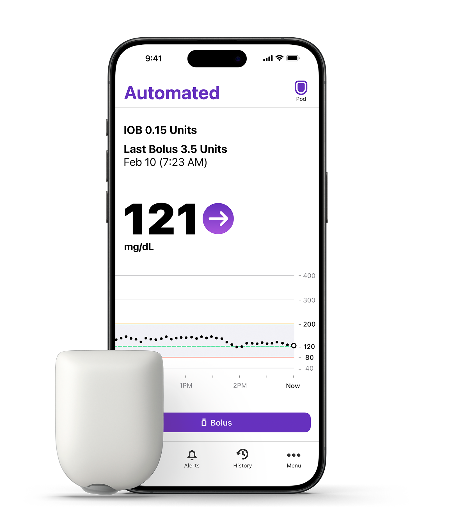

{{ sectionLabel }}
Interactive Decision‑Making with the Omnipod® 5: Real‑World T1D Scenarios
Congratulations, you have reached the end of this resource
Is there anything you would like to revisit? Select a section below to go back to it.Proposed
About the case
About the case
Introduction to the case
This is a case of a young adult male with T1D who has a history of poorly controlled diabetes initiating the Omnipod® 5 and optimizing settings

Case demographics and clinical characteristics
HbA1c reference rangesProposed
Non-diabetic normal range: Below 42 mmol/mol (6.0%).
Type 1 target: 48 mmol/mol (6.5%) or lower, if it can be achieved safely without frequent or severe hypos (low blood sugar).
Challenges in the management of this case leading to Omnipod® 5 being trailed
The patient has several current challenges in their diabetes management:
Select each challenge to explore itProposed
{{ chActiveFeature }}
Omnipod® 5 features:
{{ chActiveBullets }}
The patient is initiated on Omnipod® 5, which includes several relevant features
Optimizing the Omnipod® 5
Are you ready?Proposed
Six questions follow. Each reveals its answer once submitted.Proposed
{{ qSetup }}
Question
{{ qStem }}
Options (can select multiple):
Are you sure?
Proposed{{ r.label }}
{{ r.value }}
{{ fb.outcome }}Proposed
{{ fb.label }}
{{ fb.text }}
{{ fb.pre }}{{ fb.gAbbr }}{{ fb.post }}
Questions summaryProposed
{{ scoreLine }}
Take home messages
{{ k.text }}
You have reached the end of the case. Finish and revisit takes you to a page where any section can be reopened.Proposed
touchINTERACTIVE
Reset progress
Your answers will be cleared and the case starts again from the beginning.Proposed
References
{{ linkTitle }}
{{ linkHint }}Proposed
{{ linkText }}
How to use this resource
{{ walkTitle }}
{{ walkBody }}